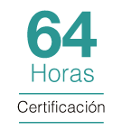
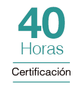

Metodología de
Enseñanza
Bajo el
Enfoque PMI®
La Escuela de Postgrado de la Universidad Tecnológica del Perú (UTP) ha diseñado el Programa de Especialización en Gestión de Proyectos con la finalidad de capacitar profesionales con los más altos estándares de calidad.
Este Programa de Especialización está alineado con las buenas prácticas del PMI®, así como con la 7ma edición del PMBOK® y abarca todos los aspectos de la gestión de proyectos, como: estudios de proyectos de inversión, fuentes de financiamiento, principios, dominios y adecuación de la Dirección de Proyectos.
La UTP ofrece un Módulo Opcional de estudios que prepara al profesional para el examen PMP® otorgado por el PMI®.
Beneficios
-
Certificacion Modular
Al culminar cada módulo, el participante recibe una Certificación. Una vez finalizado el Programa, el egresado recibe un diploma del Programa de Especialización en Gestión de Proyectos a nombre de La Escuela de Postgrado de la UTP (EPG).
-
Metodología
Modelo educativo basado en el estudio de casos que promueve la participación activa de los estudiantes. Aprendizaje colaborativo y docentes con amplia experiencia en la Gerencia de Proyectos. Acceso al Aula Virtual de la EPG.
-
Curso de Liderazgo
Diseñado para el desarrollo de habilidades que potencian el crecimiento profesional y laboral..
-
Módulo de estudios opcional para el examen PMP®
La UTP ofrece un Módulo Opcional de estudios que prepara al profesional para el examen PMP® otorgado por el PMI®.
Dirigido a
Profesionales y/o técnicos de diversas áreas de desarrollo o sectores económicos, que se desempeñen como Directores, gerentes, jefes o supervisores de Proyectos.
Consultores o miembros de equipos de proyectos
Toda persona interesada en desarrollarse profesionalmente en el ámbito de la gestión de proyectos.
Malla Curricular
-
Taller de inicio: Liderazgo Orientado a Proyectos
El taller desarrolla los diferentes estilos del líder para adaptarse a situaciones reales y lograr alto rendimiento empresarial. El participante complementa los esfuerzos del equipo a través de la motivación y la integración para mantener el compromiso de los colaboradores.
El Curso de Liderazgo se dictará en horario de 6:30 a 10:30pm en uno de los días destinados al Programa.
-
MÓDULO I: Gerencia de Proyectos en el Entorno Actual
Certificación en Sistema de Gestión SSO:
- Sistemas de Entrega de Valor.
- Principios de la Dirección de Proyectos.
- Proyectos de inversión.
- Contabilidad Gerencial
- Gestión Financiera
- GEvaluación de Proyectos de Inversión
- Fuentes de Financiamiento de un Proyecto
- Rol de “Invierte Perú”
- Responsabilidad Profesional y Ética 
Gestión Financiera de los Proyectos
-
MÓDULO II : Dominios de Desempeño del Proyecto
Dominios Referidos a la Planificación del Proyecto
- Interesados del Proyecto
- Equipos del Proyecto
- Enfoque de Desarrollo y Ciclo de Vida del Proyecto
- Planificación del Proyecto
- Incertidumbre y Ambigüedad
- Entrega
- Trabajo del Proyecto
- Medición
Dominios Referidos a la Planificación del Proyecto
-
MÓDULO III: Buenas Prácticas de la Dirección de Proyectos
Software Aplicado a la Gestión de Proyectos
- Introducción a MS Project 2019
- Gestión de Programas y Portafolios en MS Project 2019
- Gestión de Informes en MS Project 2019
- Gestión de Costos y Seguimiento del Proyecto en MS Project 2019
- Gestión de Actividades y Tiempos del Proyecto en MS Project 2019
- Modelos
- Métodos
- Artefactos
- Plataforma de Contenido Digital del PMI Standards+®
Adecuación de las Buenas Prácticas
-
MÓDULO IV (Opcional): Preparación para dar el Examen PMP® otorgado por el PMI®
- Dominio Personas
- Dominio Procesos
- Domino Gestión Estratégica
*Este Módulo está sujeto a cupo mínimo y no está incluido en el costo del Programa de Especialización en Gestión de Proyectos.

-
Guillermo Castillo
MBA, UTP, Máster en Dirección de Empresas, UEMC (España). Ingeniero Industrial, U.Lima. Gerente General IT Servicios y Consultoría, Experiencia en Ventas y Marketing en Gillette, Gerente General de Urbano
-
Luis Artola

MBA, UNI. Más de 20 años de experiencia en sistemas de gestión HSEQ para proyectos de ingeniería y construcción en sectores: minero, hidrocarburos y manufactura. Certificado como PMP y RMP. Consultor y profesor senior en postgrado.
-
Luis Del Carpio

Magíster en Administración y Magíster en Finanzas, UP. Más de 15 años de experiencia en Proyectos de Inversión Público-Privada. Es Director Proyecto y Sub Director de Servicios a Proyectos en Proinversión. Director de Proyecto Anillo Vial Periférico de Proinversión. Programa de capacitación en Gestión Urbana para un Desarrollo Sostenible Agencia de Cooperación Internacional del Japón - JICA, entre otros
-
Luis Pérez-Godoy
Magíster en Edumática y Docencia Universitaria, UTP. Certificado como Profesional de Gestión de Proyectos - PMP e ITIL v3 Foundation. Experiencia de 25 años en proyectos de los sectores educación, gobierno, finanzas y telecomunicaciones. Es Consultor de Implementación de Procesos alineados a PMBOK en Fondoempleo. Ha sido Consultor Proyecto RNP 5.0 en el Organismo Supervisor de Contrataciones del Estado.
-
Martín Collado
MBA, UTP. PMP certificado por el PMI y PMO Consultant por el PMO Global Alliance. Gerente de Proyectos para USAID y el Programa US FOREST. Más de 20 años de experiencia como consultor y especialista de proyectos y procesos en empresas como Telefónica y Repsol YPF así como entidades públicas